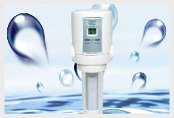

家用净水器具有的五大功能
- 06-08
- 一般来说，家用净水器具有五大功能： 1、净化：能有效滤除水中泥沙、铁锈、重金属及余氯等，同时去除水中异色、异味、细菌、病毒等，可以达到直接饮用。 2、矿化：使水中含有多种人体所需的矿物质和微量元量，保持体内营养平衡。 3、磁化：使小分子团水更加...


净水器哪个牌子好 推荐净水器-十大品牌可信赖
- 06-08
- 随着净水热时代的到来，净水器代理加盟也在火爆进行中。随之而来的就是品牌选择问题，净水器哪个牌子好?加盟哪家净水器好?净水器十大品牌有哪些?等问题接踵而来，面对市场上如此多的净水品牌，我们该如何选择呢? 选择加盟净水器，品牌很关键，现代社会，品牌...
城市污水处理业市场前景广阔
- 06-08
- 当前，城市生活污水排放已是我国城市水的主要污染源。污水处理不仅利于环境保护，而且能够促进水资源循环利用，对于建设资源节约型、环境友好型社会具有重要意义。国务院发布的《关于加强城市基础设施建设的意见》提出，要进一步加强城市污水处理设施建设，...

纯净水机的几个常见问题
- 06-08
- 一般来说，家用净水器具有五大功能： 1、净化：能有效滤除水中泥沙、铁锈、重金属及余氯等，同时去除水中异色、异味、细菌、病毒等，可以达到直接饮用。 2、矿化：使水中含有多种人体所需的矿物质和微量元量，保持体内营养平衡。 3、磁化：使小分子团水更加...